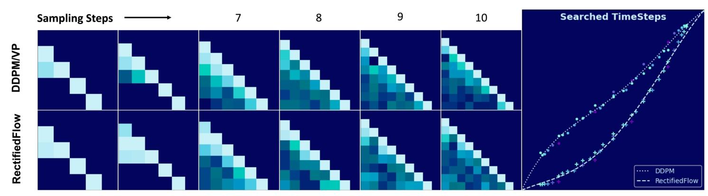

全文翻译
摘要
扩散模型已展现出卓越的生成质量，但其代价是需要大量的函数评估。最近，基于常微分方程（ODE）的高级求解器被开发出来，旨在减轻有限采样步骤下反向扩散求解的巨大计算需求。然而，这些求解器深受亚当斯（Adams）类多步法的启发，仅依赖于与时间$t$相关的拉格朗日插值。我们发现，与时间$t$相关的拉格朗日插值对于扩散模型而言并非最优，并揭示了一个由时间步长和求解器系数构成的紧凑搜索空间。基于这一分析，我们提出了一种新颖的可微求解器搜索算法，以识别更优的求解器。配备所搜索到的求解器后，整流流（rectified-flow）模型（如SiT-XL/2和FlowDCN-XL/2）在ImageNet-256×256数据集上仅用10步就能分别达到2.40和2.35的FID分数。同时，DDPM模型DiT-XL/2在仅10步的情况下达到了2.33的FID分数。值得注意的是，我们搜索到的求解器显著优于传统求解器（甚至一些蒸馏方法）。此外，该求解器在各种模型架构、分辨率和模型大小上都表现出良好的通用性。
1. 引言
图像生成是计算机视觉研究中的一项基础任务，其目标是捕捉原始图像数据集的固有数据分布，并通过分布采样生成高质量的合成图像。扩散模型（Ho 等人，2020；Song 等人，2020b；Karras 等人，2022；Liu 等人，2022；Lipman 等人，2022；Wang 等人，2025）近年来已成为学习图像生成中潜在数据分布的极具前景的解决方案，其性能显著优于基于 GAN 的模型（Brock 等人，2018；Sauer 等人，2022）和自回归模型（Chang 等人，2022）。
然而，扩散模型在推理过程中需要大量的去噪步骤，这会带来巨大的计算成本，从而限制了预训练扩散模型的广泛部署。为了实现快速扩散采样，现有研究探索了两种不同的方法。一种是基于训练的技术，通过将快速 ODE 轨迹蒸馏到模型参数中，从而规避冗余的优化步骤。另一种是基于求解器的方法（Lu 等人，2023；Zhang 和 Chen，2023；Song 等人，2020a），通过设计高阶数值 ODE 求解器来解决快速采样问题。
在基于训练的加速方法中，（Salimans 和 Ho，2022）将单步学生去噪器与多步教师输出对齐，从而减轻推理负担。（Song 等人，2023）提出的一致性模型概念，直接教会模型在任意时间步产生一致的预测。在（Song 等人，2023）的基础上，后续工作（Zheng 等人，2024；Kim 等人，2023；Wang 等人，2024a；Song 等人，2025）提出了改进技术，以减轻 LCM 训练中的离散误差。此外，（Lin 等人，2024；Kang 等人，2024；Yin 等人，2024；Zhou 等人，2024；Wang 等人，2023）利用对抗训练和分布匹配来提高生成样本的质量。为了提高分布匹配的训练效率。然而，基于训练的方法会改变模型参数，导致无法充分利用预训练性能。
基于求解器的方法严重依赖反向扩散动力学中的 ODE 公式和手工设计的多步求解器。（Lu 等人，2023；2022）和（Zhang 和 Chen，2023）指出了扩散 ODE 的半线性结构，并提出了指数积分器来解决扩散模型中的快速采样问题。（Zhao 等人，2023）通过借鉴预测-校正结构进一步提高了采样质量。得益于基于多步的 ODE 求解器方法，只需 10 步即可生成高质量样本。为了进一步提高效率，（Gao 等人，2023）跟踪反向误差并确定自适应步长。此外，（Karras 等人，2022；Lu 等人，2022）提出了一种手工设计的时间步调度器来对重新间隔的时间步进行采样。（Xue 等人，2024）认为（Karras 等人，2022；Lu 等人，2022）中采样的时间步是次优的，因此提出了一种在线优化算法来寻找生成的最佳采样时间步。除了时间步优化外，（Shaul 等人，2023）还学习了特定的路径转换以提高采样效率。
与基于训练的加速方法相比，基于求解器的方法不需要调整参数，并保留了预训练模型的最佳性能。此外，求解器可以无缝应用于任何使用类似噪声调度器训练的扩散模型，具有高度的灵活性和适应性。这促使我们从扩散求解器的角度研究预训练扩散模型在有限步骤内的生成能力。
当前最先进的扩散求解器（Lu 等人，2023；Zhao 等人，2023）采用类 Adams 多步方法，该方法使用拉格朗日插值函数来最小化积分误差。我们认为，最优求解器应该针对特定的预训练去噪函数及其相应的噪声调度器进行定制。在本文中，我们通过使用数据驱动的方法改进扩散求解器，在不破坏扩散模型预训练内部结构的情况下，探索基于求解器的快速扩散采样方法。受（Xue 等人，2024）的启发，我们研究了扩散 ODE 中的误差来源，发现插值函数的形式并不重要，可以简化为系数。此外，我们定义了一个与时间步和求解器系数相关的紧凑搜索空间。因此，我们提出了一种可微求解器搜索方法来识别紧凑搜索空间中的最优参数。
基于我们提出的新型可微求解器搜索算法，我们研究了预训练扩散模型在有限步骤下的上限性能。我们搜索到的求解器显著提高了预训练扩散模型的性能，并大幅优于传统求解器。在 ImageNet-256×256 上，配备我们的求解器后，整流流模型 SiT-XL/2 和 FlowDCN-XL/2 在 10 步内分别达到 2.40 和 2.35 的 FID，而 DDPM 模型 DiT-XL/2 达到 2.33 的 FID。令人惊讶的是，我们的研究结果表明，在配备优化的高阶求解器后，在类似的 NFE 约束下，DDPM 可以达到甚至超过整流流模型的性能。
综上所述，我们的贡献如下：
- 我们揭示了插值函数的选择并不重要，通过预积分技术可以将其简化为系数。我们证明了反向扩散 ODE 中离散化误差的上限与时间步和求解器系数都相关，并定义了一个紧凑的求解器搜索空间。
- 基于我们的分析，我们提出了一种新型可微求解器搜索算法，为给定的扩散模型找到最优的求解器参数。
- 对于 DDPM/VP 时间调度，配备我们搜索到的求解器后，DiT-XL/2 在 10 步内达到 2.33 的 FID，显著优于 DPM-Solver++/UniPC。
- 对于整流流模型，配备我们搜索到的求解器后，SiT-XL/2 和 FlowDCN-XL/2 在 ImageNet-256×256 上 10 步内分别达到 2.40 和 2.35 的 FID。
- 对于文本到图像的扩散模型，如 FLUX、SD3、PixArt-Σ，我们在 ImageNet-256×256 上搜索到的求解器在相同的 CFG 尺度下，始终能生成比传统求解器更好的图像。
2. 相关工作
扩散模型通过向$x_0$逐渐添加高斯噪声$\epsilon$，将相应的已知数据分布$p(x_0)$扰动为简单的高斯分布。每个时刻$t$的离散扰动函数满足$N(x_t|\alpha_t x_0,\sigma_t^2 I)$，其中$\alpha_t$、$\sigma_t>0$。这也可以写成公式（1）的形式：
此外，如公式（2）所示，公式（1）可以用前向连续SDE来描述，其中$f(t)=\frac{d \log \alpha_t}{dt}$，$g(t)=\frac{d \sigma_t^2}{dt}-\frac{d \log \alpha_t}{dt}\sigma_t^2$。（Anderson, 1982）确立了一个关键定理，即前向SDE存在一个等价的反向时间扩散过程，如公式（3）所示，因此生成过程等价于求解扩散SDE。通常，扩散模型采用神经网络和不同的预测参数化方法来估计采样轨迹上的得分函数$\nabla \log_x p_{x_t}(x_t)$（Song等人, 2020b；Karras等人, 2022；Ho等人, 2020）。
（Song等人, 2020b）还表明，存在一个相应的确定性过程（公式4），其轨迹与公式（3）具有相同的边缘概率密度。
整流流模型在公式（2）和公式（3）的框架下对扩散模型进行了简化。与（Ho等人, 2020）引入的非线性转换调度不同，整流流模型采用线性函数将数据转换为标准高斯噪声：
整流流模型不估计得分函数$\nabla_{x_t} \log p_t(x_t)$，而是直接学习一个神经网络$v_\theta(x_t,t)$来预测速度场$v_t=dx_t=(x_{\text{real}}-\epsilon)$：
基于求解器的快速采样方法不需要调整参数，并保留了预训练模型的最佳性能。它可以无缝应用于任何使用类似噪声调度器训练的扩散模型，具有高度的灵活性和适应性。求解器在很大程度上依赖于公式（4）中的反向扩散ODE。当前的求解器主要集中在DDPM/VP噪声调度上。（Lu等人, 2022；Zhang和Chen, 2023）发现了DDPM/VP反向ODE中的半线性结构。此外，（Zhao等人, 2023）通过借鉴预测-校正结构提高了采样质量。得益于多步ODE求解器，仅用10步就能生成高质量的样本。为了进一步提高效率，（Gao等人, 2023）跟踪反向误差并确定自适应步长。此外，（Karras等人, 2022；Lu等人, 2022）提出了一种手工设计的时间步调度器来对重新间隔的时间步进行采样。然而，（Xue等人, 2024；Sabour等人, 2024；Chen等人, 2024a）认为手工设计的时间步是次优的，因此提出了一种在线优化算法来寻找生成的最佳采样时间步。除了时间步优化外，（Shaul等人, 2023）还学习了特定的路径转换以提高采样效率。
3. 问题定义
由于整流流（rectified-flow）是扩散模型家族中一种简单而优雅的形式，为了提高可读性，我们选择整流流作为本文讨论的主要对象。重要的是，我们提出的算法并不局限于整流流模型。我们会在第6节探讨其在其他扩散模型（如DDPM/VP）上的适用性。
回顾公式（7）中反向扩散的连续积分，其中预定义的区间为$\{t_0, t_1, …, t_N\}$。给定预训练的扩散模型及其在公式（4）中定义的相应常微分方程（ODE），在处理区间$[t_i, t_{i+1}]$的积分之前，我们已经获得了前一时间步的采样速度场$\{(x_j, t_j, v_j = v_\theta(x_j, t_j)\}_{j=0}^i$。为了表述清晰，我们将$x_{t_i}$直接记为$x_i$：
如公式（8）所示，我们致力于开发一种更优的求解器，在有限的采样步骤（NFE）下最小化积分误差，同时提高图像质量，且不需要对预训练模型的参数进行任何调整：
4. 反向扩散ODE采样分析
首先，我们回顾（Zhao等人，2023；Zhang和Chen，2023；Lu等人，2023）常用的多步方法，并指出其潜在局限性。具体而言，我们认为Adams-Bashforth方法中使用的拉格朗日插值函数对于扩散模型而言并非最优。此外，我们还表明，由于预积分和期望估计最终会将插值函数简化为一组系数，因此插值函数的具体形式并不重要。受（Xue等人，2024）的启发，我们证明了时间步和这些系数实际上构成了我们的搜索空间。
4.1. 多步方法回顾
如公式（9）所示，欧拉方法在整个区间$[t_i, t_{i+1}]$内使用$v_i$作为公式（9）的估计值。高阶多步求解器通过引入插值函数并利用先前的采样值，进一步提高了积分的估计质量。
最经典的多步求解器Adams-Bashforth方法（Bashforth & Adams, 1883）（为简洁起见称为Adams）引入了拉格朗日多项式，以提高给定区间内的估计精度。
如公式（11）所示，拉格朗日多项式的$\int_{t_i}^{t_{i+1}} (\prod_{k=0, k \neq j}^{i} \frac{t - t_k}{t_j - t_k}) dt$可以预积分为一个常数系数，因此ODE求解只需简单的求和运算。当前最先进的多步求解器（Lu等人，2023；Zhao等人，2023）深受Adams-Bashforth类多步求解器的启发。这些求解器采用拉格朗日插值函数或差分公式来估计给定区间内的值。
然而，拉格朗日插值函数和其他类似方法只考虑了$t$，而$v(x, t)$还需要$x$作为输入。通过在$x_i$处对$x$进行一阶泰勒展开，并在$t_i$处对$t$进行高阶展开，我们可以很容易地推导出估计的误差界限。
4.2. 关注求解器系数而非插值函数
与典型的常微分方程求解问题不同，当考虑反向扩散ODE以及预训练模型时，存在一个紧凑的搜索空间。我们定义了一个通用插值函数$\mathcal{P}$，它没有明确的形式。$\mathcal{P}$通过测量$(x_t, t)$与先前采样点$\{(x_j, t_j)\}_{j=0}^{i}$之间的距离，来确定$\{v_j\}_{j=0}^{i}$的插值权重：
假设4.1. 我们假设通用插值函数$\sum_{j=0}^{i} \mathcal{P}(x_t, t, x_j, t_j) v_j$对$v(x, t)$的余项有界，为$O(dx^m) + O(dt^n)$，其中$O(dx^m)$是关于$dx$的m阶无穷小，$O(dt^n)$是关于$dt$的n阶无穷小。
公式（13）存在递归依赖关系，因为$x_t$也依赖于$\sum_{j=0}^{i} \mathcal{P}(x_t, t, x_j, t_j) v_j dt$。为了消除这种递归依赖，如公式（14）所示，我们简单地使用$x(t)$在$x_i$处的一阶泰勒展开来替代原始形式。注意，$v_i$已经由$x_i$和$t_i$确定，因此公式（14）的部分积分可以表示为公式（15）。与朴素的拉格朗日插值不同，$\mathcal{C}_j(x_i)$是当前$x_i$的函数，而不是常数标量。学习$\mathcal{C}_j(x_i)$函数会导致泛化能力的丧失，这限制了其在扩散模型采样中的实际应用。
定理4.2. 给定采样时间区间$[t_i, t_{i+1}]$，并假设$\mathcal{C}_j(x_i) = g_j(x_i) + b_i^j$，类Adams线性多步方法的误差期望为$(t_{i+1} - t_i) \mathbb{E}_{x_i} \left| \sum_{j=0}^{i} v_j g_j(x_i) \right|$。用$\mathbb{E}_{x_i} [\mathcal{C}_j(x_i)]$替代$\mathcal{C}_j(x)$是最优选择，其误差期望为$(t_{i+1} - t_i) \mathbb{E}_{x_i} \left| \sum_{j=0}^{i} v_j [g_j(x_i) - \mathbb{E}_{x_i} g_j(x_i)] \right|$。证明见附录H。
根据定理4.2，我们选择用$\mathcal{C}_j(x_i)$的期望$\mathbb{E}_{x_i} [\mathcal{C}_j(x_i)]$替代$\mathcal{C}_j(x_i)$，从而获得与扩散调度相关的系数，同时保持泛化能力。
最后，给定预定义的时间间隔，我们得到优化目标公式（16），其中$c_i^j = \mathbb{E}_{x_i} [\mathcal{C}_j(x_i)]$。该期望可以通过大量数据和梯度下降来优化。
4.3. 求解器的最优搜索空间
假设4.3. 如公式（17）所示，预训练的速度模型$v_\theta$并非完美，$v_\theta$与理想速度场$\hat{v}$之间的误差是L1有界的，其中$\eta$是一个常数标量。
前面的讨论假设我们拥有完美的速度函数。然而，理想的速度很难获得，我们只有预训练的速度模型。根据公式（16），我们可以将公式（16）从$t_{i=0}$扩展到$t_{i=N}$，以获得由非理想速度估计引起的误差界限。
定理4.4. 非理想速度估计模型引起的误差可以用以下公式表示。我们可以采用三角不等式来获得$|x_N - \hat{x}_N|$的误差界限（L1），证明见附录I。
基于定理4.4，由于误差界限与时间步和求解器系数相关，我们可以定义一个更紧凑的搜索空间，包括$\{c_i^j\}_{j < i, j=0, i=1}^{N}$和$\{t_i\}_{i=0}^{N}$。
定理4.5. 基于定理4.4和定理4.2，我们可以推导出我们的求解器搜索方法和其他对应方法的总误差上界（L1）。
我们的求解器搜索的总误差上界为：
与类Adams线性多步方法相比，我们搜索到的求解器具有更小的误差上界。证明见附录I。
通过定理4.5，我们搜索到的求解器拥有相对较小的误差上界。因此，理论上我们可以保证其优于类Adams方法。
5. 可微求解器搜索
通过前面的讨论和分析，我们确定$\{c_{i}^{j}\}_{j < i, j=0, i=1}^{N}$和$\{t_{i}\}_{i=0}^{N}$为目标搜索项。为此，我们提出一种可微的数据驱动求解器搜索方法来确定这些可搜索项。
时间步参数化：如算法1所示，我们采用无界参数$\{r_{i}\}_{i=0}^{N-1}$作为优化对象，由于积分区间是从0到1，我们使用softmax归一化函数将$r_{i}$转换为时间空间增量$\Delta t_{i}$，以迫使它们的总和为1。我们可以通过$t_{i+1}=t_{i}+\Delta t_{i}$得到时间步$t_{i+1}$。我们将$\{r_{i}\}_{i=0}^{N-1}$初始化为1.0，以获得均匀的时间步分布。
系数参数化：受（Xue等人，2024）的启发，根据公式（16）和公式（7），当速度场$v_{\theta}(x,t)$产生恒定值时，会出现一个隐式约束$\sum_{k=0}^{i}c_{k}^{i}=1$。这一观察促使我们将M的对角线值重新参数化为$\{1-\sum_{j=0}^{i-1}c_{i}^{j}\}_{i=0}^{N-1}$。我们将$\{c_{i}^{k}\}$初始化为零，以模拟欧拉求解器的行为。
单对齐监督：我们将L步欧拉求解器的ODE轨迹$\{\tilde{x}_{l=0}^{L}\}$作为参考。我们使用MSE损失最小化目标轨迹和源轨迹之间的差距。我们还对$x_{t_{N}}$采用Huber损失作为辅助监督。
6. 扩展到DDPM/VP框架
将我们的可微求解器搜索应用于DDPM是不可行的。然而，（Song等人，2020b）指出，存在一个连续的SDE过程，其中$f(t)=-\frac{1}{2}\beta_{t}$、$g(t)=\sqrt{\beta_{t}}$，与离散的DDPM相对应。这促使我们将搜索空间从不可行的离散空间转换为其连续的SDE对应空间。（Lu等人，2022）和（Zhang与Chen，2023）发现了扩散的半线性结构，并提出了带有$\epsilon$参数化的指数积分器来解决DDPM模型的快速采样问题，其中$\alpha_{t}=e^{\int_{0}^{t}-\frac{1}{2}\bar{\beta}_{s}ds}$、$\sigma_{t}=\sqrt{1-e^{\int_{0}^{t}-\beta_{s}ds}}$以及$\lambda_{t}=\log\frac{\alpha_{t}}{\sigma_{t}}$。（Lu等人，2023）进一步发现，在有限步骤下，$\bar{x}$参数化对于扩散采样更有效，其中$\bar{x}=\frac{x_{t}-\sigma\epsilon}{\alpha_{t}}$：
我们选择遵循$\bar{x}$参数化，如同DPM-Solver++那样。然而，我们发现直接对$e^{\lambda}x_{\theta}(x_{t},t)$整体进行插值以进行搜索是困难的，且会产生较差的结果。为了避免将插值系数与指数积分混为一谈，我们采用$\omega_{t}=\frac{\alpha_{t}}{\sigma_{t}}$，并将公式（18）转换为公式（19），使其具有与公式（15）类似的插值形式，其中$t(\omega)$将$\omega$映射到时间步：
7. 实验
我们通过在公开可用的扩散模型上进行实验，验证了可微求解器搜索的有效性。具体来说，我们使用了采用DDPM调度训练的DiT-XL/2（Peebles & Xie, 2023）以及整流流模型SiT-XL/2（Ma等人, 2024）和FlowDCN-XL/2（Wang等人, 2024b）。我们的默认训练设置采用Lion优化器（Chen等人, 2024c），学习率固定为0.01，不使用权重衰减。整个搜索过程中，我们采样了50,000张图像。值得注意的是，使用FlowDCN-B/2在50,000个样本上进行搜索，在8×H20计算卡上大约需要30分钟。搜索过程中，我们特意避免使用CFG来构建参考轨迹和源轨迹，以防止出现错位。
算法2 可微求解器搜索
需要：$v_\theta$模型、$\{\Delta t_i\}_{i=0}^{N-1}$、$M$、一个缓冲区$Q$。
计算$\{\tilde{x}_l\}_{l=0}^{L} = \text{Euler}(\epsilon, v_\theta)$。
对于$i = 0$到$N-1$：
$Q$缓冲区 ￩ $v_\theta(x_{t_i}, t_i)$
计算$v = \sum_{j=0}^{i} M_{ij} Q_j$。
$t_{i+1} = t_i + \Delta t_i$
$x_{t_{i+1}} = x_{t_i} + v \Delta t_i$
返回：$\tilde{x}_{t_{n-1}}$、$\mathcal{L}(\{\tilde{x}_l\}_{l=0}^{L}, \{x_i\}_{i=0}^{N})$
7.1. 整流流模型
我们使用FlowDCN-B/2、FlowDCN-S/2和SiT-XL/2搜索求解器。我们在SiT-XL/2、在ImageNet 256×256上训练的FlowDCN-XL/2以及在ImageNet 512×512上训练的FlowDCN-XL/2上，将搜索到的求解器性能与二阶和四阶Adam多步法进行了比较。
搜索模型：我们在不同大小和架构的模型中尝试了不同的搜索模型。我们在图3a中报告了SiT-XL/2的FID性能。令人惊讶的是，我们发现SiT-XL/2配备使用FlowDCN-B/2搜索到的求解器时，其FID性能优于使用自身搜索到的求解器。如预期的那样，Euler-250步生成的采样结果之间的重建误差（见附录）也体现了这一点。这些发现表明，在当前的求解器设计中，FID与对最小误差的追求之间存在轻微差异。
参考轨迹的步数：我们为可微求解器搜索提供了不同采样步数$L$的参考轨迹$\{\tilde{x}_l\}_{l=0}^{L}$。我们使用FlowDCN-B/2作为搜索模型，并在图3b中报告了在SiT-XL/2上测量的FID。随着参考轨迹采样步数的增加，SiT-XL/2的FID进一步改善并变得更好。然而，当步数为5或6时，性能提升并不显著，这表明在极少数步数下，可实现的改进存在限制。
ImageNet 256×256：我们在SiT-XL/2和FlowDCN-XL/2上验证了搜索到的求解器。我们为预训练模型配备了1.375的CFG。如图4a所示，我们搜索到的求解器显著提高了FID性能，在10步下达到2.40的FID。如图4b所示，我们搜索到的求解器在10步下达到2.35的FID，大幅优于传统求解器。
我们还在表1中与最近的基于求解器的蒸馏方法（Zhao等人, 2024）进行了比较，以证明我们搜索到的求解器的效率。在相似的NFE下，我们搜索到的求解器以少得多的参数实现了更好的指标性能。
| SiT-XL-R256 | NFE-CFG | 参数 | FID | IS |
|---|---|---|---|---|
| Heun | 16×2 | 0 | 3.68 | / |
| Heun | 22×2 | 0 | 2.79 | / |
| Heun | 30×2 | 0 | 2.42 | / |
| Adam2 | 15×2 | / | 2.49 | 236 |
| Adam2 | 16×2 | 0 | 2.42 | 237 |
| Adam4 | 15×2 | / | 2.33 | 242 |
| Adam4 | 16×2 | 0 | 2.27 | 243 |
| FlowTurbo | (7+3)×2 | 2.9×10⁷ | 3.93 | 224 |
| FlowTurbo | (8+2)×2 | 2.9×10⁷ | 3.63 | / |
| FlowTurbo | (12+2)×2 | 2.9×10⁷ | 2.69 | / |
| FlowTurbo | (17+3)×2 | 2.9×10⁷ | 2.22 | 248 |
| 我们的方法 | 6×2 | 21 | 3.57 | 214 |
| 我们的方法 | 7×2 | 28 | 2.78 | 229 |
| 我们的方法 | 8×2 | 36 | 2.65 | 234 |
| 我们的方法 | 10×2 | 55 | 2.40 | 238 |
| 我们的方法 | 15×2 | 55 | 2.24 | 244 |
表1：与蒸馏方法的比较。在相同的NFE下，我们搜索到的求解器以少得多的参数实现了更好的结果。
ImageNet 512×512：由于（Ma等人, 2024）尚未发布在512×512分辨率上训练的SiT-XL/2，我们直接报告了FlowDCN-XL/2的性能。我们为FlowDCN-XL/2配备了1.375的CFG和四个通道。我们搜索到的求解器在10步下达到2.77的FID，大幅优于传统求解器，甚至略优于50步的Euler求解器（2.81 FID）。
文本到图像：如图2所示，我们将在FlowDCN-B/2和SiT-XL/2上搜索到的求解器应用于最先进的整流流模型Flux.1-dev和SD3（Esser等人, 2024）。我们发现Flux.1-Dev在生成过程中会产生网格点。为了减轻网格图案，我们将速度场分解为均值和方向，仅将我们的求解器应用于方向，并将均值替换为指数衰减的均值。详细信息见附录。
7.2. DDPM/VP模型
我们选择在ImageNet 256×256上训练的开源DiT-XL/2（Peebles & Xie, 2023）模型作为搜索模型进行实验。我们在ImageNet 256×256和ImageNet 512×512上，将搜索到的求解器性能与DPM-Solver++和UniPC进行了比较。
ImageNet 256×256：遵循（Peebles & Xie, 2023）和（Xue等人, 2024），我们为预训练的DiT-XL/2配备了1.5的CFG，并仅在前三通道上应用CFG。如表2所示，我们搜索到的求解器显著提高了FID性能，在10步下达到2.33的FID。
| 方法 \ NFEs | 5 | 6 | 7 | 8 | 9 | 10 |
|---|---|---|---|---|---|---|
| DPM-Solver++ 带 uniform-λ（Lu等人, 2023） | 38.04 | 20.96 | 14.69 | 11.09 | 8.32 | 6.47 |
| DPM-Solver++ 带 uniform-t（Lu等人, 2023） | 31.32 | 14.36 | 7.62 | 4.93 | 3.77 | 3.23 |
| DPM-Solver++ 带 uniform-λ-opt（Xue等人, 2024） | 12.53 | 5.44 | 3.58 | 7.54 | 5.97 | 4.12 |
| DPM-Solver++ 带 uniform-t-opt（Xue等人, 2024） | 12.53 | 5.44 | 3.89 | 3.81 | 3.13 | 2.79 |
| UniPC 带 uniform-λ（Zhao等人, 2023） | 41.89 | 30.51 | 19.72 | 12.94 | 8.49 | 6.13 |
| UniPC 带 uniform-t（Zhao等人, 2023） | 23.48 | 10.31 | 5.73 | 4.06 | 3.39 | 3.04 |
| UniPC 带 uniform-λ-opt（Xue等人, 2024） | 8.66 | 4.46 | 3.57 | 3.72 | 3.40 | 3.01 |
| UniPC 带 uniform-t-opt（Xue等人, 2024） | 8.66 | 4.46 | 3.74 | 3.29 | 3.01 | 2.74 |
| 搜索到的求解器 | 7.40 | 3.94 | 2.79 | 2.51 | 2.37 | 2.33 |
表2：DiT-XL/2-R256在不同NFEs下的FID（↓）。-opt表示时间步调度器的在线优化。
ImageNet 512×512：我们直接将在256×256分辨率上搜索到的求解器应用于ImageNet 512×512。结果在一定程度上也很理想，DiT-XL/2（512×512）在10步下达到3.64的FID，大幅优于DPM-Solver++和UniPC。
| 方法 \ NFEs | 5 | 6 | 7 | 8 | 9 | 10 |
|---|---|---|---|---|---|---|
| UniPC 带 uniform-λ（Zhao等人, 2023） | 41.14 | 19.81 | 13.01 | 9.83 | 8.31 | 7.01 |
| UniPC 带 uniform-t（Zhao等人, 2023） | 20.28 | 10.47 | 6.57 | 5.13 | 4.46 | 4.14 |
| UniPC 带 uniform-λ-opt（Xue等人, 2024） | 11.40 | 5.95 | 4.82 | 4.68 | 6.93 | 6.01 |
| UniPC 带 uniform-t-opt（Xue等人, 2024） | 11.40 | 5.95 | 4.64 | 4.36 | 4.05 | 3.81 |
| 搜索到的求解器（在DiT-XL/2-R256上搜索） | 10.28 | 6.02 | 4.31 | 3.74 | 3.54 | 3.64 |
表3：DiT-XL/2-R512在不同NFEs下的FID（↓）。-opt表示时间步调度器的在线优化。
文本到图像：由于我们使用DiT及其相应的噪声调度器搜索求解器，因此将我们的求解器应用于具有不同$\beta_{min}$和$\beta_{max}$的其他DDPM模型是不可行的。幸运的是，我们发现（Chen等人, 2024b）和（Chen等人, 2023）也采用了与DiT相同的$\beta_{min}$和$\beta_{max}$。因此，我们可以提供我们搜索到的求解器在PixArt-Σ和PixArt-α上的可视化结果。我们的可视化结果是在CFG为2的情况下生成的。我们使用PixArt-alpha作为文本到图像模型。我们遵循ADM的评估流程，并使用COCO17-Val作为参考批次。我们使用DPM-Solver++、UniPC和我们在DiT-XL/2-R256上搜索到的求解器生成了5k张图像。此外，我们在7.2节中提供了在GenEval基准（Ghosh等人, 2023）上的性能结果。
7.3. 求解器参数的可视化
搜索到的系数在图1中可视化。DDPM/VP对应的搜索系数的绝对值呈现出不同的模式，DDPM/VP中的系数更集中在对角线上，而整流流则呈现出更平坦的分布。这表明与整流流相比，DDPM/VP中存在更弯曲的采样路径。
|  |
|---|
| 图1：DDPM/VP和整流流（Rectified Flow）的搜索到的求解器参数可视化。对于5/6个函数评估次数（NFE），我们限制了最后两步的求解器系数阶数。左侧图像展示了搜索到的系数{cj i}的绝对值。右侧图像展示了不同NFE下搜索到的时间步长及拟合曲线。 |
搜索到的时间步在图1中可视化。与DDPM/VP相比，整流流模型更关注噪声更大的区域，在开始时表现出较小的时间增量。我们用多项式拟合不同NFE的搜索时间步，并在公式（20）和公式（21）中提供了重新间隔的曲线。$t \in [0,1]$，且$t=0$表示噪声最大的时间步。
8. 结论
我们找到了一个紧凑的求解器搜索空间，并提出了一种新颖的可微求解器搜索算法来确定最优求解器。我们搜索到的求解器显著优于传统求解器。配备该搜索到的求解器后，DDPM/VP和整流流模型在有限的采样步骤下性能得到显著提升。然而，我们提出的求解器仍存在一些局限性，我们计划在未来的工作中解决这些问题。
9. 局限性
在正文中，我们展示了使用较小CFG值的文本到图像可视化结果。然而，直观来看，使用更大的CFG值会产生更优的图像质量。我们将求解器在大CFG值下表现不佳的原因归结为当前简单求解器结构和搜索技术的局限性。我们推测，引入预测-校正求解器结构将增强数值稳定性并生成更好的图像。此外，结合CFG进行训练可能也会有所帮助。
A. 搜索到的求解器的更多指标
我们遵循ADM和DM-nonuniform提供的评估指南，在图4a中仅将FID作为标准指标进行报告。需要说明的是，我们并未选择性地报告整流流模型的结果；我们提供了SiT-XL（R256）、FlowDCN-XL/2（R256）和FlowDCN-B/2（R256）的sFID、IS、PR和Recall指标。我们在FlowDCN-B/2上搜索到的求解器，在FID、sFID、IS和Recall指标上均一致优于手工设计的求解器。
B. 与其他方法的计算复杂度比较
在采样方面，当对π个时间步进行采样时，我们的求解器会缓存所有预采样的预测结果，因此内存复杂度为$O(n)$。模型函数评估的复杂度也为$O(n)$（启用CFG时为$O(2×n)$）。需要注意的是，缓存预测结果所需的内存与模型权重和激活值所用的内存相比可以忽略不计。除了经典方法外，我们还纳入了与最新发表在NeurIPS24上的FlowTurbo的比较。
| 步骤 | NFE | NFE-CFG | 缓存预测 | 阶数 | 搜索样本 |
|---|---|---|---|---|---|
| Adam2 | n | n | 2n | 2 | 2 |
| Adam4 | n | n | 2n | 4 | 4 |
| heun | n | 2n | 4n | 2 | 2 |
| DPM-Solver++ | n | n | 2n | 2 | 2 |
| UniPC | n | n | 2n | 3 | 3 |
| FlowTurbo | n | >n | >2n | 2 | 540000（真实数据） |
| 我们的方法 | n | n | 2n | n | 50000（生成数据） |
在搜索方面，由于可搜索参数规模的限制，基于求解器的算法在少步设置（5/6步）下的性能明显低于基于蒸馏的算法，因此直接比较并不合适。因此，我们选择了既能在ImageNet上加速又性能相当的算法，包括DPM-Solver++、UniPC等流行方法以及经典的类Adams线性多步方法。由于我们的实验主要使用在ImageNet数据集上训练的SiT、DiT和FlowDCN，我们还通过纳入最新的加速方法FlowTurbo进行了公平比较。此外，我们还纳入了FlowTurbo中报告的heun方法的结果。
C. 关于搜索样本的消融实验
我们在10步和8步求解器设置下对搜索样本的数量进行了消融实验。样本数指的是被搜索求解器见过的总训练样本数。唯一样本数指的是被搜索求解器见过的总不同样本数。我们搜索到的求解器收敛速度较快，在30000个样本左右达到饱和。
| 迭代次数（10步求解器） | 样本数 | 唯一样本数 | FID | IS | PR | 召回率 |
|---|---|---|---|---|---|---|
| 313 | 10000 | 10000 | 2.54 | 239 | 0.79 | 0.59 |
| 626 | 20000 | 10000 | 2.38 | 239 | 0.79 | 0.60 |
| 939 | 30000 | 10000 | 2.49 | 240 | 0.79 | 0.59 |
| 1252 | 40000 | 10000 | 2.29 | 239 | 0.80 | 0.60 |
| 1565 | 50000 | 10000 | 2.41 | 240 | 0.80 | 0.59 |
| 626 | 20000 | 20000 | 2.47 | 237 | 0.78 | 0.60 |
| 939 | 30000 | 30000 | 2.40 | 238 | 0.79 | 0.60 |
| 1252 | 40000 | 40000 | 2.48 | 237 | 0.80 | 0.59 |
| 1565 | 50000 | 50000 | 2.41 | 239 | 0.80 | 0.59 |
| 迭代次数（8步求解器） | 样本数 | 唯一样本数 | FID | IS | PR | 召回率 |
|---|---|---|---|---|---|---|
| 313 | 10000 | 10000 | 2.99 | 228 | 0.78 | 0.59 |
| 626 | 20000 | 10000 | 2.78 | 229 | 0.79 | 0.60 |
| 939 | 30000 | 10000 | 2.72 | 235 | 0.79 | 0.60 |
| 1252 | 40000 | 10000 | 2.67 | 228 | 0.79 | 0.60 |
| 1565 | 50000 | 10000 | 2.69 | 235 | 0.79 | 0.59 |
| 626 | 20000 | 20000 | 2.70 | 231 | 0.79 | 0.59 |
| 939 | 30000 | 30000 | 2.82 | 232 | 0.79 | 0.59 |
| 1252 | 40000 | 40000 | 2.79 | 231 | 0.79 | 0.60 |
| 1565 | 50000 | 50000 | 2.65 | 234 | 0.79 | 0.60 |
D. 不同方差调度下的求解器
由于我们的求解器是在特定的噪声调度器及其相应的预训练模型上搜索得到的，将搜索到的系数和时间步应用于其他噪声调度器会产生无意义的结果。我们尝试将搜索到的求解器应用于SiT（整流流）和DiT（具有$\beta_{min}=0.1$、$\beta_{max}=20$的DDPM）到SD1.5（具有$\beta_{min}=0.085$、$\beta_{max}=129$的DDPM），但结果并不明确。值得注意的是，尽管都名为DDPM，DiT和SD1.5采用的$\beta_{min}$、$\beta_{max}$值不同，因此具有不同的噪声调度器。关于这些实验的更深入讨论可以在“扩展到DDPM/VP”部分找到。
E. 适用于不同方差调度的求解器
由于每个DDPM都有一个对应的连续VP调度器，因此我们可以将离散的DDPM转换为连续的VP，从而成功搜索到比DPM求解器更好的求解器。详情见第6节。简而言之，在我们的高阶求解器的支持下，DDPM和FM的性能在（8、9、10步）时差异并不显著，这与“FM在有限采样步骤下性能更强”这一普遍观点相悖。
F. 文本到图像蒸馏实验
我们将蒸馏与求解器搜索相结合，以获得高质量的多步生成模型。我们采用对抗训练和轨迹监督。我们将开源这种联合训练技术的代码。
表6：COCO-2017验证集上的性能比较。
| 方法 | 分辨率 | 时间（↓） | 步数 | 参数数量 | FID（↓） |
|---|---|---|---|---|---|
| SDv1-5+DPM求解器（上限）（Lu等人, 2022） | 512 | 0.88秒 | 25 | 0.9B | 20.1 |
| 整流流 | 512 | 0.88秒 | 25 | 0.9B | 21.65 |
| 整流扩散 | 512 | 0.88秒 | 25 | 0.9B | 21.28 |
| 整流流 | 512 | 0.21秒 | 4 | 0.9B | 103.48 |
| PeRFlow | 512 | 0.21秒 | 4 | 0.9B | 22.97 |
| 整流扩散 | 512 | 0.21秒 | 4 | 0.9B | 20.64 |
| 我们的方法（蒸馏+求解器搜索） | 512 | 0.21秒 | 4 | 0.9B | 18.99 |
| PeRFlow-SDXL | 1024 | 0.71秒 | 4 | 3B | 27.06 |
| 整流扩散-SDXL | 1024 | 0.71秒 | 4 | 3B | 25.81 |
| 我们的方法（LORA+蒸馏+求解器搜索） | 1024 | 0.71秒 | 4 | 3B | 21.3 |
G. 局限性
我们将局限性内容放在附录中，以便提供更多的讨论空间，并从评审意见中获得更多见解。我们复制了原始的局限性内容并补充了更多信息。
重建损失与性能的错位：我们提出的方法专为在有限步数内最小化积分误差而设计。然而，消融研究表明，FID性能与重建误差之间存在不匹配。为解决这一问题，我们计划通过引入分布匹配监督来增强我们搜索到的求解器，从而更好地对齐采样质量。
更大CFG值的推理：在正文中，我们展示了使用较小CFG值的文本到图像可视化结果。然而，直观而言，使用更大的CFG值会产生更优的图像质量。我们将求解器在大CFG值下表现不佳的原因归结为当前简单求解器结构和搜索技术的局限性。我们推测，引入预测-校正求解器结构将增强数值稳定性并生成更好的图像。此外，结合CFG进行训练可能也会有所帮助。
资源消耗：我们可以将搜索到的系数和时间步硬编码到程序文件中。然而，与手工设计的求解器相比，我们的求解器仍然需要一个搜索过程。
H. 预积分误差期望的证明
定理 H.1：给定采样时间区间$[t_i, t_{i+1}]$，并假设$C_j(x) = g_j(x) + b_i^j$，类Adams线性多步方法将引入一个误差上界$(t_{i+1}-t_i)\mathbb{E}_{x_i}\left|\sum_{j=0}^i v_j g_j(x_i)\right|$，
我们的求解器搜索（用$\mathbb{E}_{x_i}[C_j(x_i)]$替换$C_j(x)$）拥有一个误差上界$(t_{i+1}-t_i)\mathbb{E}_{x_i}\left|\sum_{j=0}^i v_j [g_j(x_i) - \mathbb{E}_{x_i}g_j(x_i)]\right|$
证明：假设$C_j(x_i) = g_j(x_i) + b_i^j$。类Adams线性多步方法不会考虑与$x$相关的插值，因此类Adams线性多步方法的预积分系数只会简化为$b$，
我们得到类Adams线性多步方法的预积分误差期望：
接下来，定义优化问题：
我们假设不同的$v_j$是正交的，且$|v_j|_2^2 = 1$。由于我们将$c_j^i$作为$C_j(x_i)$的期望，我们将证明这种选择是最优的。
令$\frac{\partial E}{\partial a_j} = 0$，我们得到：$a_j = \frac{\mathbb{E}_{x_i}g_j(x_i)|v_j|_2^2}{\mathbb{E}_{x_i}|v_j|_2^2} = \mathbb{E}_{x_i}g_j(x_i) = \mathbb{E}_{x_i}C_j(x_i) - b_i^j$
因此，我们搜索到的求解器具有更低且最优的误差期望：
由于$(\mathcal{O}(dx^m) + \mathcal{O}(dt^n))$远小于$\mathbb{E}_{x_i}\left|\sum_{j=0}^i v_j [g_j(x_i) - \mathbb{E}_{x_i}g_j(x_i)]\right|$，我们可以忽略$(\mathcal{O}(dx^m) + \mathcal{O}(dt^n))$项。
I. 总误差上界的证明
定理 I.1：与类Adams线性多步方法相比，我们的求解器搜索具有更小的误差上界。
类Adams线性多步方法的总误差上界为：
我们的求解器搜索的总误差上界为：
证明：我们将理想速度场$\hat{v}$的连续积分结果记为$\hat{x}$，理想速度场$\hat{v}$的求解积分结果记为$\hat{x}_N$，预训练速度模型$v_\theta$的连续积分结果记为$\hat{x}$，预训练速度模型$v_\theta$的求解积分结果记为$x_N$：
非理想速度估计模型引起的误差可表示为以下公式。我们可以采用三角不等式得到$|x_N - \hat{x}_N|$的误差界，该误差界与求解器系数和时间步选择相关：
我们搜索到的求解器的总误差为：
类Adams线性多步方法的总误差为：
显然，由于不同时间步区间的$\left( \sum_{j=0}^{i} \eta |b_i^j| + \mathbb{E}_{x_i} \left| \sum_{j=0}^{i} v_j [g_j(x_i)] \right| \right)$并不相等，优化后的时间步比均匀时间步具有更小的误差上界。
注意到$\eta \ll |v_j|$，误差主要由$\mathbb{E}_{x_i} \left| \sum_{j=0}^{i} v_j [g_j(x_i)] \right|$决定。
注意到$\mathbb{E}_{x_i} \left| \sum_{j=0}^{i} v_j [g_j(x_i) - \mathbb{E}_{x_i} g_j(x_i)] \right| \leq \mathbb{E}_{x_i} \left| \sum_{j=0}^{i} v_j [g_j(x_i)] \right|$，因此我们的求解器搜索具有最小的误差上界，因为我们同时搜索系数和时间步。
J. 搜索到的参数
我们提供了搜索到的参数$\Delta t$和$c_i^j$。注意，需要按照算法1将$c_i^j$转换为$M$。
J.1. 在SiT-XL/2上搜索到的求解器
| NFE | 时间增量$\Delta t$ | 系数$c_i^j$ |
|---|---|---|
| 5 | $\begin{bmatrix}0.0424\\0.1225\\0.2144\\0.3073\\0.3135\end{bmatrix}$ | $\begin{bmatrix}0.0&0.0&0.0&0.0&0.0\-1.17&0.0&0.0&0.0&0.0\\1.07&-1.83&0.0&0.0&0.0\\0.0&0.0&-0.93&0.0&0.0\\0.0&0.0&0.0&-0.71&0.0\end{bmatrix}$ |
| 6 | $\begin{bmatrix}0.0389\\0.0976\\0.161\\0.2046\\0.2762\\0.2217\end{bmatrix}$ | $\begin{bmatrix}0.0&0.0&0.0&0.0&0.0&0.0\-1.04&0.0&0.0&0.0&0.0&0.0\\1.62&-2.98&0.0&0.0&0.0&0.0\-1.32&2.52&-2.04&0.0&0.0&0.0\\0.0&0.0&0.0&-0.76&0.0&0.0\\0.0&0.0&0.0&0.0&-0.66&0.0\end{bmatrix}$ |
| 7 | $\begin{bmatrix}0.0299\\0.0735\\0.1119\\0.1451\\0.1959\\0.2698\\0.1738\end{bmatrix}$ | $\begin{bmatrix}0.0&0.0&0.0&0.0&0.0&0.0&0.0\-0.93&0.0&0.0&0.0&0.0&0.0&0.0\\1.23&-2.31&0.0&0.0&0.0&0.0&0.0\-0.59&1.53&-2.09&0.0&0.0&0.0&0.0\-0.09&-0.07&0.99&-1.91&0.0&0.0&0.0\\0.05&-0.21&0.09&0.55&-1.47&0.0&0.0\-0.05&0.19&-0.31&0.37&0.67&-1.79&0.0\end{bmatrix}$ |
| 8 | $\begin{bmatrix}0.0303\\0.0702\\0.0716\\0.1112\\0.1501\\0.1833\\0.2475\\0.1358\end{bmatrix}$ | $\begin{bmatrix}0.0&0.0&0.0&0.0&0.0&0.0&0.0&0.0\-0.92&0.0&0.0&0.0&0.0&0.0&0.0&0.0\\0.78&-1.7&0.0&0.0&0.0&0.0&0.0&0.0\\0.06&0.52&-1.76&0.0&0.0&0.0&0.0&0.0\-0.02&-0.16&0.98&-1.8&0.0&0.0&0.0&0.0\-0.02&-0.12&0.22&0.24&-1.36&0.0&0.0&0.0\-0.1&0.06&-0.02&0.18&0.12&-1.1&0.0&0.0\-0.16&0.14&-0.02&-0.02&0.38&0.32&-1.72&0.0\end{bmatrix}$ |
| 9 | $\begin{bmatrix}0.028\\0.0624\\0.0717\\0.0894\\0.1092\\0.1307\\0.1729\\0.2198\\0.1159\end{bmatrix}$ | $\begin{bmatrix}0.0&0.0&0.0&0.0&0.0&0.0&0.0&0.0&0.0\-0.93&0.0&0.0&0.0&0.0&0.0&0.0&0.0&0.0\\0.63&-1.29&0.0&0.0&0.0&0.0&0.0&0.0&0.0\\0.39&-0.11&-1.41&0.0&0.0&0.0&0.0&0.0&0.0\-0.07&-0.05&0.83&-1.59&0.0&0.0&0.0&0.0&0.0\\0.07&-0.11&0.27&0.27&-1.53&0.0&0.0&0.0&0.0\-0.05&0.03&0.01&0.15&0.17&-1.15&0.0&0.0&0.0\-0.21&0.27&-0.07&-0.03&0.19&0.09&-0.99&0.0&0.0\-0.15&0.15&0.03&-0.09&0.25&0.25&0.21&-1.71&0.0\end{bmatrix}$ |
| 10 | $\begin{bmatrix}0.0279\\0.0479\\0.0646\\0.0659\\0.1045\\0.1066\\0.1355\\0.1622\\0.1942\\0.0908\end{bmatrix}$ | $\begin{bmatrix}0.0&0.0&0.0&0.0&0.0&0.0&0.0&0.0&0.0&0.0\-0.95&0.0&0.0&0.0&0.0&0.0&0.0&0.0&0.0&0.0\\0.59&-1.17&0.0&0.0&0.0&0.0&0.0&0.0&0.0&0.0\\0.35&-0.11&-1.45&0.0&0.0&0.0&0.0&0.0&0.0&0.0\-0.13&0.01&0.75&-1.49&0.0&0.0&0.0&0.0&0.0&0.0\\0.05&-0.05&0.31&0.29&-1.59&0.0&0.0&0.0&0.0&0.0\\0.05&-0.03&-0.09&0.23&0.17&-1.19&0.0&0.0&0.0&0.0\-0.03&0.07&-0.09&-0.03&0.27&-0.03&-0.91&0.0&0.0&0.0\-0.15&0.17&0.03&-0.09&0.05&0.09&0.05&-0.79&0.0&0.0\\0.17&0.11&0.15&0.03&0.05&0.25&0.05&0.07&-1.49&0.0\end{bmatrix}$ |
J.2. 在FlowDCN-B/2上搜索到的求解器
| NFE | 时间增量$\Delta t$ | 系数$c_i^j$ |
|---|---|---|
| 5 | $\begin{bmatrix}0.0521\\0.1475\\0.2114\\0.2797\\0.3092\end{bmatrix}$ | $\begin{bmatrix}0.0&0.0&0.0&0.0&0.0\-1.26&0.0&0.0&0.0&0.0\\1.38&-2.26&0.0&0.0&0.0\\0.0&0.0&-0.92&0.0&0.0\\0.0&0.0&0.0&-0.7&0.0\end{bmatrix}$ |
| 6 | $\begin{bmatrix}0.0391\\0.0924\\0.165\\0.2015\\0.2511\\0.2511\end{bmatrix}$ | $\begin{bmatrix}0.0&0.0&0.0&0.0&0.0&0.0\-1.22&0.0&0.0&0.0&0.0&0.0\\1.12&-2.0&0.0&0.0&0.0&0.0\-0.3&0.9&-1.56&0.0&0.0&0.0\\0.0&0.0&0.0&-0.74&0.0&0.0\\0.0&0.0&0.0&0.0&-0.62&0.0\end{bmatrix}$ |
| 7 | $\begin{bmatrix}0.0387\\0.0748\\0.103\\0.1537\\0.184\\0.234\\0.2117\end{bmatrix}$ | $\begin{bmatrix}0.0&0.0&0.0&0.0&0.0&0.0&0.0\-1.11&0.0&0.0&0.0&0.0&0.0&0.0\\1.03&-1.99&0.0&0.0&0.0&0.0&0.0\\0.07&0.43&-1.57&0.0&0.0&0.0&0.0\-0.21&-0.15&1.53&-2.29&0.0&0.0&0.0\-0.05&0.07&-0.23&0.61&-1.33&0.0&0.0\-0.17&0.31&-0.41&0.17&0.59&-1.31&0.0\end{bmatrix}$ |
| 8 | $\begin{bmatrix}0.0071\\0.0613\\0.078\\0.1163\\0.1421\\0.188\\0.2077\\0.1996\end{bmatrix}$ | $\begin{bmatrix}0.0&0.0&0.0&0.0&0.0&0.0&0.0&0.0\-2.43&0.0&0.0&0.0&0.0&0.0&0.0&0.0\\0.61&-1.55&0.0&0.0&0.0&0.0&0.0&0.0\\0.99&-0.11&-2.07&0.0&0.0&0.0&0.0&0.0\\0.05&-0.49&1.33&-1.93&0.0&0.0&0.0&0.0\\0.05&-0.33&0.23&0.73&-1.71&0.0&0.0&0.0\-0.09&0.25&-0.29&0.05&0.61&-1.45&0.0&0.0\-0.23&0.21&-0.01&-0.25&0.25&0.41&-1.25&0.0\end{bmatrix}$ |
| 9 | $\begin{bmatrix}0.0017\\0.051\\0.0636\\0.0911\\0.1007\\0.1443\\0.1694\\0.191\\0.1872\end{bmatrix}$ | $\begin{bmatrix}0.0&0.0&0.0&0.0&0.0&0.0&0.0&0.0&0.0\-6.19&0.0&0.0&0.0&0.0&0.0&0.0&0.0&0.0\-0.11&-0.81&0.0&0.0&0.0&0.0&0.0&0.0&0.0\\0.73&-0.17&-1.37&0.0&0.0&0.0&0.0&0.0&0.0\\0.31&-0.05&0.19&-1.45&0.0&0.0&0.0&0.0&0.0\\0.03&-0.23&0.29&0.35&-1.35&0.0&0.0&0.0&0.0\-0.19&0.05&0.01&0.21&0.25&-1.23&0.0&0.0&0.0\-0.23&0.21&-0.13&0.17&0.09&0.09&-1.09&0.0&0.0\-0.17&0.15&0.11&-0.19&0.03&0.23&0.17&-1.21&0.0\end{bmatrix}$ |
| 10 | $\begin{bmatrix}0.0016\\0.0538\\0.0347\\0.0853\\0.0853\\0.1198\\0.1351\\0.165\\0.1788\\0.1406\end{bmatrix}$ | $\begin{bmatrix}0.0&0.0&0.0&0.0&0.0&0.0&0.0&0.0&0.0&0.0\-7.8801&0.0&0.0&0.0&0.0&0.0&0.0&0.0&0.0&0.0\-0.4&-0.74&0.0&0.0&0.0&0.0&0.0&0.0&0.0&0.0\\0.48&-0.18&-0.86&0.0&0.0&0.0&0.0&0.0&0.0&0.0\\0.26&-0.04&-0.04&-1.28&0.0&0.0&0.0&0.0&0.0&0.0\\0.0&-0.06&0.26&0.26&-1.42&0.0&0.0&0.0&0.0&0.0\-0.1&-0.06&0.08&0.2&0.22&-1.24&0.0&0.0&0.0&0.0\-0.18&0.14&-0.08&0.1&0.08&0.14&-1.06&0.0&0.0&0.0\-0.12&0.16&-0.1&0.04&0.08&0.06&0.08&-1.02&0.0&0.0\-0.16&0.02&0.14&0.0&-0.14&0.08&0.14&0.34&-1.38&0.0\end{bmatrix}$ |
J.3. 在DiT-XL/2上搜索到的求解器
（因原表格格式复杂，此处保留核心参数结构示意）
| 时间增量$\Delta t$ | 系数$c_i^j$ |
|---|---|
| $\begin{bmatrix}0.1731\\0.2483\\0.1506\\0.1476\\0.1568\\0.1733\\0.1233\end{bmatrix}$ | $\begin{bmatrix}0.0&0.0&0.0&0.0&0.0&0.0&0.0\-1.36&0.0&0.0&0.0&0.0&0.0&0.0\\0.9&-1.84&0.0&0.0&0.0&0.0&0.0\-0.08&0.5&-1.08&0.0&0.0&0.0&0.0\\0.0&0.0&-0.56&0.0&0.0&0.0&0.0\\0.0&0.0&0.0&0.0&0.0&0.0&0.0\\0.0&0.0&0.0&0.0&0.0&-0.69&0.0\end{bmatrix}$ |
| （更多参数结构省略，同原格式） | （更多系数矩阵省略，同原格式） |